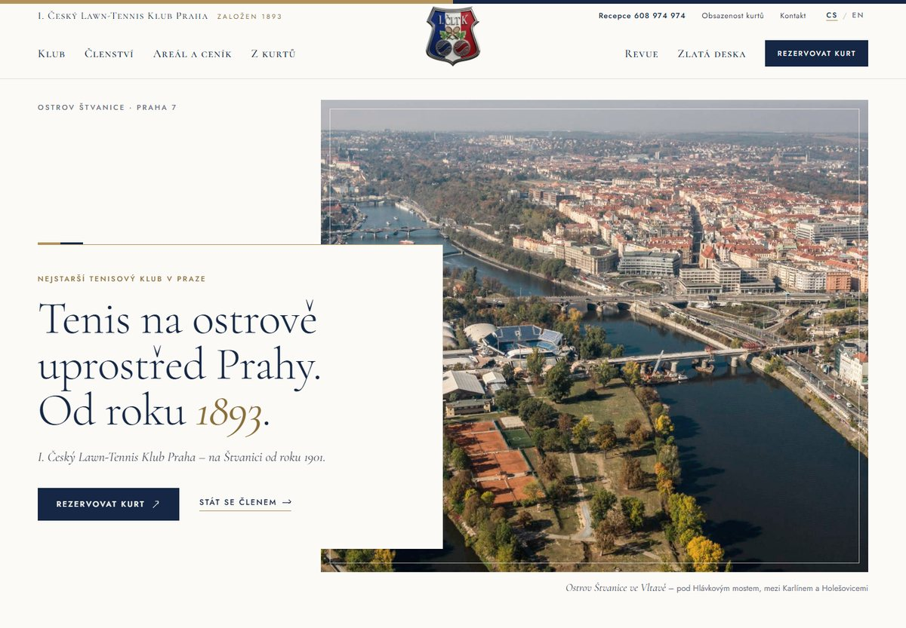

Návrh 1

Zlatá deska
Klubový dům · noblesní · tradiční
Web jako vstupní hala soukromého klubu: teplý papír, zlaté písmo, čestné desky a rytiny. Barvy navazují na návrh Prague Open, takže klub a turnaj budou vypadat jako jedna rodina.
Písmo Cormorant Garamond a Jost
- tři wimbledonští vítězové ve štvanické historii jako triptych
- zlatá čestná deska: čestní a zasloužilí členové, mistři republiky
- kalkulačka ceny členství přímo na úvodní stránce